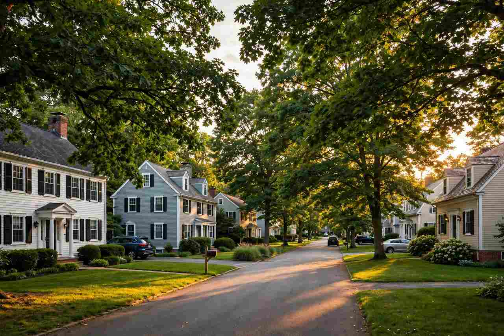

Rodent Control · Branchville, NJ
Same-Day Rodent Control in Branchville, NJ
If rodents have moved into your Branchville home or business, Murvo can help today. Our local, licensed crews provide same-day inspection, targeted removal, durable exclusion, and cleanup, all under one flat-rate written quote with a written guarantee. No hourly billing and no surprise add-ons, just rodent specialists serving Branchville and communities throughout Sussex County every day of the week. Service covers 2 ZIP codes across Sussex County, including 07826, 07890, with same-day appointments where schedules allow.
24/7Availability
2ZIP codes covered
Same-dayResponse
Licensed · Upfront options · Written guarantees · Fully insured
Branchville at a glance
Local Rodent Control for Branchville, NJ.
Sussex County
Countynorthern New Jersey
RegionPaterson · 35 mi
Nearest metro64 miles north of Trenton
From Trenton2
ZIP codes covered Service by service in Branchville
Rodent Control Services Available in Branchville
Thirty rodent services, one local standard in Branchville: inspection-led, exclusion-first, and quoted in writing before work begins. Browse the full list for Sussex County below - each section explains what the service involves here, what it typically costs nationally, and how fast we can start.
- 01Rodent Control↗
- 02Rodent Inspection↗
- 03Rodent Removal↗
- 04Rodent Exclusion↗
- 05Rodent Proofing↗
- 06Rat Control↗
- 07Mice Control↗
- 08Mouse Removal↗
- 09Rat Removal↗
- 10Rodent Trapping↗
- 11Rodent Baiting↗
- 12Rodenticide Application↗
- 13Attic Rodent Removal↗
- 14Crawl Space Rodent Removal↗
- 15Wall Rodent Removal↗
- 16Kitchen Rodent Control↗
- 17Garage Rodent Control↗
- 18Commercial Rodent Control↗
- 19Residential Rodent Control↗
- 20Emergency Rodent Removal↗
- 21Same-Day Rodent Control↗
- 22Rodent Damage Repair↗
- 23Rodent Waste Cleanup↗
- 24Rodent Disinfection↗
- 25Rodent Odor Removal↗
- 26Dead Rodent Removal↗
- 27Rodent Dropping Cleanup↗
- 28Rodent Exclusion for Roofs↗
- 29Rodent Exclusion for Vents↗
- 30Rodent Exclusion for Chimneys↗
Rodent Control in Branchville
Rodent Control in Branchville
Most Branchville calls start with a sound nobody can place, then droppings confirm what the noise suggested. Murvo treats rodent control as a sequence, not a single visit: find the species, clear what is inside, close what let it in. Before any work begins, you approve a flat-rate written quote.
When you need rodent control in Branchville, the job starts with what is actually happening in your part of Sussex County. Murvo crews work Branchville every week, so they know how Norway rat (Rattus norvegicus) and House mouse (Mus musculus) behave around pre-war rowhomes, brownstones, triple-deckers, and older single-family homes here - and where they get in: basement foundations, sewer and pipe chases, shared party walls, and alley-facing garage and door seals. We arrive equipped for the full job, confirm the flat rate in writing before work begins, and cover the whole Branchville area, including Ross Corner, Crandon Lakes. No call-center runaround and no open-ended hourly billing - just a local crew, a clear plan, and a written quote you approve first. Seasonal timing matters for rodent control in Branchville: rodents surge in Branchville from October through March.
Our process follows five stages: Inspect, Remove, Exclude, Clean, and Monitor. Contaminated areas are cleaned safely, and monitoring visits confirm activity has stopped before we sign the job off. A technician first checks the attic, crawl space, garage, and kitchen, recording droppings, nests, gnaw marks, and entry gaps with photos. Active animals are cleared with targeted trapping matched to the species, then openings around pipes, vents, and rooflines are sealed with copper mesh, hardware cloth, and metal flashing. You approve every stage in advance, in writing.
Booking takes one call, and same-day appointments are available in most Branchville areas. Your technician inspects first, talks you through the plan in plain language, and only starts once you approve the written quote. Work is carried out in stages, with trap checks and sealing visits booked ahead. At the final visit we walk the finished work together and confirm monitoring is clear. Questions are answered at every stage, day or night.
In most of Branchville, we can offer a same-day appointment for rodent control, and our lines are open 24/7 for urgent cases like scratching in the walls or a rodent in a living area. Your technician inspects first, explains the plan, and quotes a flat rate in writing before any work begins, so help starts fast without surprises. The written quote for your Branchville property will spell out exactly which of these applies before any work starts.
The honest answer is that it depends on species, activity level, and how much sealing your home needs, which is why Murvo inspects first and then gives you a flat-rate quote in writing. For national context only, Angi's 2026 data averages rat and mouse removal and control at $396, typically $189 to $655; that is not a Murvo price, and your written quote is the figure you pay.
Rodent Inspection in Branchville
Rodent Inspection in Branchville
You do not need to see a rodent to have a rodent problem in Branchville. Droppings in the attic, gnaw marks near basement foundations, sewer and pipe chases, shared party walls, and alley-facing garage and door seals, or noises after dark are enough reason to book a rodent inspection. Murvo technicians check the whole property, photograph what they find, and give you a prioritized plan plus a flat-rate written quote for any work recommended.
When you need rodent inspection in Branchville, the job starts with what is actually happening in your part of Sussex County. Murvo crews work Branchville every week, so they know how Norway rat (Rattus norvegicus) and House mouse (Mus musculus) behave around pre-war rowhomes, brownstones, triple-deckers, and older single-family homes here - and where they get in: basement foundations, sewer and pipe chases, shared party walls, and alley-facing garage and door seals. We arrive equipped for the full job, confirm the flat rate in writing before work begins, and cover the whole Branchville area, including Ross Corner, Crandon Lakes. No call-center runaround and no open-ended hourly billing - just a local crew, a clear plan, and a written quote you approve first. In Branchville, rodent inspection calls most often involve pre-war rowhomes, brownstones, triple-deckers, and older single-family homes, where basement foundations, sewer and pipe chases, shared party walls, and alley-facing garage and door seals decide whether the fix holds.
Think of the inspection as three passes. The review pass brings it together: species, likely numbers, contamination, and the order in which fixes should happen. Each pass is photographed, and nothing is recommended without evidence from one of those passes to support it. The exterior pass checks siding, vents, pipe entries, and roof junctions for gaps and rub marks. The interior pass covers attic insulation, crawl-space corners, and kitchen voids for droppings, nests, and gnawing. The report separates what rodents are doing now from what the structure merely allows them to do later.
After booking, we confirm your time window by text or call. Before leaving, they review photos and priorities with you, leave the written findings, and schedule any follow-up work you approve. On arrival, your background-checked technician checks in, protects floors and access points, and works through a set inspection checklist inside and out. The inspection itself is backed by licensed, insured service and our written workmanship guarantee on quoted work.
You do not have to wait days for answers in Branchville. Same-day rodent inspection appointments are available in most areas, urgent calls are taken 24/7, and most home inspections take under an hour. You finish the visit with photos, written findings, and flat-rate pricing for anything we recommend. In Sussex County, most cases involve the Norway rat (Rattus norvegicus) and the House mouse (Mus musculus), so the inspection focuses on their routes first.
Nationally, a professional rodent inspection typically runs $100 to $200 according to Angi's 2026 data, and it is often credited toward the job if you proceed. Murvo confirms your exact rodent inspection price before the visit and quotes any follow-up work as a flat rate in writing after inspection, so the figure you approve is the figure you pay, with no hourly billing.
Rodent Removal in Branchville
Rodent Removal in Branchville
Removal works best when it is species-specific. In Branchville, pre-war rowhomes, brownstones, triple-deckers, and older single-family homes give Norway rat (Rattus norvegicus) and House mouse (Mus musculus) warm voids, stored food, and quiet nesting corners reached through basement foundations, sewer and pipe chases, shared party walls, and alley-facing garage and door seals. Our licensed, insured technicians assess numbers and access routes first, then set traps on proven runways and return on schedule until catches fall to zero and monitoring stays clear.
When you need rodent removal in Branchville, the job starts with what is actually happening in your part of Sussex County. Murvo crews work Branchville every week, so they know how Norway rat (Rattus norvegicus) and House mouse (Mus musculus) behave around pre-war rowhomes, brownstones, triple-deckers, and older single-family homes here - and where they get in: basement foundations, sewer and pipe chases, shared party walls, and alley-facing garage and door seals. We arrive equipped for the full job, confirm the flat rate in writing before work begins, and cover the whole Branchville area, including Ross Corner, Crandon Lakes. No call-center runaround and no open-ended hourly billing - just a local crew, a clear plan, and a written quote you approve first. In Branchville, rodent removal calls most often involve pre-war rowhomes, brownstones, triple-deckers, and older single-family homes, where basement foundations, sewer and pipe chases, shared party walls, and alley-facing garage and door seals decide whether the fix holds.
Removal starts with an assessment of species, numbers, and access routes across attics, wall voids, garages, and kitchens. Once you approve the written quote, technicians set traps along proven runways, check them on schedule, and remove animals promptly and hygienically. Catch records show progress clearly instead of relying on guesswork. Removal is followed immediately by entry-point exclusion, because new rodents will replace removed ones through any gap left open, and disinfection is arranged after heavy activity. Photos document each stage for you.
Same-day removal appointments are available across much of Branchville for active infestations. Follow-up checks are booked before we leave, contaminated areas are made safe, and monitoring confirms the property is clear before we sign off. Every stage is explained in plain language as work proceeds. After a quick inspection, your background-checked technician explains the trapping plan and gives you a flat-rate written quote; work starts only with your approval. You keep copies of all visit records.
For active infestations in Branchville, rodent removal can usually start the same day you call, and our team answers 24/7 when a rodent is loose in a living area. The first visit confirms activity and sets traps straight away; return visits then clear and reset them until monitoring shows the property is completely clear. The written quote for your Branchville property will spell out exactly which of these applies before any work starts.
Cost depends on the species, how many animals are active, and how much sealing the home needs afterwards, so Murvo inspects first and quotes one flat rate in writing. For national context only, Angi's 2026 data averages rat and mouse removal at $396, typically $189 to $655. That benchmark is not a Murvo price; your written quote is the exact figure.
Rodent Exclusion in Branchville
Rodent Exclusion in Branchville
Rats can pass through a hole the size of a quarter, and mice through one far smaller, which is why pre-war rowhomes, brownstones, triple-deckers, and older single-family homes in Branchville hide so many working entry points around basement foundations, sewer and pipe chases, shared party walls, and alley-facing garage and door seals. Our technicians inspect soffits, eaves, pipe entries, foundation cracks, and door sweeps in detail, then prioritize the openings that matter most for Norway rat (Rattus norvegicus) and House mouse (Mus musculus) locally.
When you need rodent exclusion in Branchville, the job starts with what is actually happening in your part of Sussex County. Murvo crews work Branchville every week, so they know how Norway rat (Rattus norvegicus) and House mouse (Mus musculus) behave around pre-war rowhomes, brownstones, triple-deckers, and older single-family homes here - and where they get in: basement foundations, sewer and pipe chases, shared party walls, and alley-facing garage and door seals. We arrive equipped for the full job, confirm the flat rate in writing before work begins, and cover the whole Branchville area, including Ross Corner, Crandon Lakes. No call-center runaround and no open-ended hourly billing - just a local crew, a clear plan, and a written quote you approve first. Coverage for rodent exclusion spans 2 ZIP codes in Sussex County, including 07826, 07890.
Before any sealing, active rodents are cleared with trapping so nothing is trapped inside the structure. Because exclusion removes the route in rather than relying on chemicals, it reduces the need for rodenticides and supports pet-safe, no-poison control. A final walkthrough shows you every protected opening, and monitoring checks confirm no new activity appears at sealed points. We then work opening by opening around basement foundations, sewer and pipe chases, shared party walls, and alley-facing garage and door seals, rooflines, and utility penetrations, photographing each finished seal. Every seal is listed on your written guarantee.
Before sealing day, confirm pets are secured and access to the roofline and foundation is clear. Afterwards you receive the photographs, the guarantee, and a date for the follow-up check that confirms everything is holding as intended. The crew then works through the agreed list, checks that no animals remain inside, and fits each seal cleanly. If monitoring ever finds fresh activity at a sealed point, that written inventory tells us exactly what to inspect first.
Rodent exclusion in Branchville usually starts with a survey visit we can often schedule the same day you call. Sealing itself is booked as soon as any active animals are cleared, because nothing is sealed inside. Most homes are fully sealed within days, not weeks, and urgent entry points near wiring or food areas are prioritized first. In Sussex County, most cases involve the Norway rat (Rattus norvegicus) and the House mouse (Mus musculus), so the inspection focuses on their routes first.
After the survey of your Branchville home, every opening that needs sealing is listed and priced as one flat-rate written quote, so you pay only for the work your property needs. For national context, Angi's 2026 data puts basic exclusion at $200 to $600 depending on access and the number of openings; that benchmark is not a Murvo price.
Rodent Proofing in Branchville
Rodent Proofing in Branchville
The best rodent problem is the one that never starts. Rodent proofing in Branchville hardens your home before Norway rat (Rattus norvegicus) and House mouse (Mus musculus) move in: sealing gaps, screening vents, fitting door sweeps, and removing the food and shelter that attract them. Murvo surveys the whole property, prioritizes the work, and gives one flat-rate written quote for the work.
Homeowners in Branchville call Murvo for rodent proofing because the problem here is specific: Norway rat (Rattus norvegicus) pressure around pre-war rowhomes, brownstones, triple-deckers, and older single-family homes, tight access at basement foundations, sewer and pipe chases, shared party walls, and alley-facing garage and door seals, and activity that follows the local season. Our Sussex County crews diagnose the real source before recommending work, explain the options in plain language, and quote one flat rate in writing. Across Branchville - including Ross Corner, Crandon Lakes - every visit is backed by licensed, insured technicians and our written workmanship guarantee. Homes near Ogdensburg tend to show activity first in Branchville, which is why inspections start with basement foundations, sewer and pipe chases, shared party walls, and alley-facing garage and door seals.
Proofing starts with a whole-property assessment inside and out, from overhanging branches and cluttered garages to unsealed vents and gaps under doors. Every item is prioritized so essential work happens first. The plan typically combines structural sealing of utility entries and foundation cracks with mesh screening on vents, chimneys, and rooflines, plus door sweeps where light shows underneath. We also address attractants: securing pet food and bird seed storage, trimming vegetation away from walls, and clearing harborage. Photos show each weakness we find.
Book a rodent proofing survey in Branchville and we will arrange a visit time that suits your household, often the same day. Your technician walks the property with you, photographs weak points, and explains the plan in plain language. You receive a flat-rate written quote separating essential from optional work. Approved sealing is completed cleanly, then a seasonal re-check is scheduled. The finished work is fully guaranteed in writing by Murvo.
Rodent proofing is preventive, so there is rarely a rush, but surveys in Branchville can often be arranged the same day you call, and always within a few days. Most proofing work is completed in a single visit once you approve the plan, and booking before colder weather gives your home protection ahead of the seasonal rush indoors. The written quote for your Branchville property will spell out exactly which of these applies before any work starts.
For national context, Angi's 2026 data puts exclusion, the core of proofing, at $200 to $600 for basic work. That figure is a benchmark, not a Murvo price. After surveying your Branchville property, we separate quick homeowner wins from specialist sealing and quote the professional work as one flat rate in writing, so you can stage spending sensibly.
Rat Control in Branchville
Rat Control in Branchville
In pre-war rowhomes, brownstones, triple-deckers, and older single-family homes, rats exploit structure and routine together, traveling fences and pipes to reach food near basement foundations, sewer and pipe chases, shared party walls, and alley-facing garage and door seals. Our rat control across Sussex County checks attics, basements, drains, and outbuildings as one connected system, because treating a single room while harborage survives elsewhere simply moves the problem around the property.
When you need rat control in Branchville, the job starts with what is actually happening in your part of Sussex County. Murvo crews work Branchville every week, so they know how Norway rat (Rattus norvegicus) and House mouse (Mus musculus) behave around pre-war rowhomes, brownstones, triple-deckers, and older single-family homes here - and where they get in: basement foundations, sewer and pipe chases, shared party walls, and alley-facing garage and door seals. We arrive equipped for the full job, confirm the flat rate in writing before work begins, and cover the whole Branchville area, including Ross Corner, Crandon Lakes. No call-center runaround and no open-ended hourly billing - just a local crew, a clear plan, and a written quote you approve first. In Branchville, rat control calls most often involve pre-war rowhomes, brownstones, triple-deckers, and older single-family homes, where basement foundations, sewer and pipe chases, shared party walls, and alley-facing garage and door seals decide whether the fix holds.
Wary rats punish rushed trapping, so the program begins with patience. Exclusion follows at rooflines and entry points, and monitoring devices remain in place afterwards to verify that quiet routes have genuinely stayed quiet. Unset traps are placed on confirmed runways and pre-baited until feeding becomes confident and regular. Only then are traps set, checked frequently, and repositioned as the pattern shifts. Catches are recorded by location, giving a clear picture of colony size and movement. Counts matter here, because a falling catch trend tells a different story from a single lucky night.
After booking, we confirm access to attics, basements, and outbuildings so the first visit is productive. Follow-up visits are booked ahead, trapped rats are removed promptly, and a final monitoring check verifies the result before sign-off under our written workmanship guarantee. On arrival, your background-checked technician walks the property with you, sets out the plan, and starts pre-baiting straight away once you approve the quote. You see documented progress at each visit.
Call day or night — urgent rat control calls in Branchville are answered 24/7, and a same-day inspection can usually start the program. Pre-baiting begins on that first visit once you approve the written quote, traps are set when rats are feeding confidently, and scheduled checks continue until activity stops. A Branchville inspection confirms it on site - dropping size, gnaw marks, and entry points tell the story quickly.
Species, colony size, and the number of entry points to seal all affect rat work, which is why Murvo inspects first and quotes one flat rate in writing. Angi's 2026 figures, given for national context only, average rat control and removal at $396 and typically run $189 to $655; the written quote for your Branchville home is the exact price.
Mice Control in Branchville
Mice Control in Branchville
Small rice-like droppings, shredded nesting material, and faint scratching after dark are the classic signs mice have moved into a Branchville home. Murvo's mice control surveys activity and entry points, traps in clusters along the routes mice travel nightly, and seals gaps as small as a pencil width. One flat-rate written quote covers the program before work begins.
Homeowners in Branchville call Murvo for mice control because the problem here is specific: Norway rat (Rattus norvegicus) pressure around pre-war rowhomes, brownstones, triple-deckers, and older single-family homes, tight access at basement foundations, sewer and pipe chases, shared party walls, and alley-facing garage and door seals, and activity that follows the local season. Our Sussex County crews diagnose the real source before recommending work, explain the options in plain language, and quote one flat rate in writing. Across Branchville - including Ross Corner, Crandon Lakes - every visit is backed by licensed, insured technicians and our written workmanship guarantee. Around Ogdensburg, Ross Corner, Crandon Lakes, the pattern is similar: House mouse (Mus musculus) finds basement foundations, sewer and pipe chases, shared party walls, and alley-facing garage and door seals first, and lasting mice control has to close those routes.
Mice travel short, familiar routes, hugging walls and rarely crossing open floors. Sealing then closes pencil-width gaps behind baseboards, around radiator pipes, and at service entries, while scent-marked surfaces are cleaned so new mice find no welcoming trail. Control exploits that habit: traps are clustered along baseboards, behind appliances, and inside attic voids where droppings concentrate, rather than scattered hopefully around rooms. Technicians clear and reset on schedule, tracking numbers visit by visit until they reach zero. That is why placements stay fixed between checks unless evidence, rather than impatience, gives a reason to move them.
After booking, we confirm your time window and any rooms where you have seen droppings or heard scratching. On arrival, your background-checked technician inspects, sets clustered traps at proven hotspots, and talks you through pet and child safety around placements. Return visits clear and reset traps, then sealing is completed and the written guarantee confirmed at the final check. You approve the plan and price before trapping starts. No surprises are added later.
Mice programs move quickly in Branchville: a mice control survey can often be arranged the same day you call, and traps are set on that first visit once you approve the quote. Because mice investigate new objects fast, catches usually begin quickly, and scheduled check visits follow until a final confirmation shows activity has fully stopped. The written quote for your Branchville property will spell out exactly which of these applies before any work starts.
Mouse work is priced by the number of rooms affected and the amount of sealing involved, so Murvo surveys first and quotes one flat rate in writing. For national context only, Angi's 2026 data averages rat and mouse control and removal at $396, typically $189 to $655. That is not a Murvo price; your written quote is exact.
Mouse Removal in Branchville
Mouse Removal in Branchville
Mice nest where it is warm and undisturbed: attics, wall voids, crawl spaces, and behind kitchen cabinets in pre-war rowhomes, brownstones, triple-deckers, and older single-family homes across Branchville. They feed close to those nests, following basement foundations, sewer and pipe chases, shared party walls, and alley-facing garage and door seals and pipe runs between rooms. Our technicians check warm spots near water heaters and appliances where mice raise young, so no nesting site is missed during removal.
Homeowners in Branchville call Murvo for mouse removal because the problem here is specific: Norway rat (Rattus norvegicus) pressure around pre-war rowhomes, brownstones, triple-deckers, and older single-family homes, tight access at basement foundations, sewer and pipe chases, shared party walls, and alley-facing garage and door seals, and activity that follows the local season. Our Sussex County crews diagnose the real source before recommending work, explain the options in plain language, and quote one flat rate in writing. Across Branchville - including Ross Corner, Crandon Lakes - every visit is backed by licensed, insured technicians and our written workmanship guarantee. Around Ogdensburg, Ross Corner, Crandon Lakes, the pattern is similar: House mouse (Mus musculus) finds basement foundations, sewer and pipe chases, shared party walls, and alley-facing garage and door seals first, and lasting mouse removal has to close those routes.
Trap-based removal is the default here for practical reasons. Cleanup follows the same care: droppings and nesting are never dry-swept, surfaces are disinfected first, and waste is bagged and removed hygienically. Once activity ends, access points are sealed thoroughly, and advice on storage and scent-trail cleaning helps the kitchen stay clear. It is safer around children and pets, results are visible and countable, and no animal is left to die inside a hidden void. Monitoring after sealing confirms the finish, so the result rests on evidence rather than a hopeful guess.
For urgent mouse problems in Branchville, contact Murvo for a same-day response where available. Return visits are scheduled to clear and reset traps, and cleanup and sealing follow once catches reach zero. The final visit confirms the result and your written workmanship guarantee. Your technician surveys the home, explains the multi-trap plan, and confirms a flat-rate written quote before starting. You are updated after every visit, without ever chasing us.
For mice active in kitchens or living areas of your Branchville home, mouse removal can often begin the same day you call. That first visit surveys nesting sites and sets traps as soon as you approve the quote, and because mice investigate traps quickly, catches usually start fast. Return visits continue until numbers reach zero. That is also why Murvo pairs removal with exclusion in Branchville - treating the animal without closing basement foundations, sewer and pipe chases, shared party walls, and alley-facing garage and door seals rarely lasts.
Rooms involved and sealing needed determine the cost of removal, so we survey first and agree a flat rate in writing before work begins. As national context only, Angi's 2026 data averages rat and mouse removal at $396, with a typical range of $189 to $655; that benchmark is not a Murvo price, and your written quote covers your exact program.
Rat Removal in Branchville
Rat Removal in Branchville
In pre-war rowhomes, brownstones, triple-deckers, and older single-family homes, where rats enter decides how removal unfolds. Roof-level access through basement foundations, sewer and pipe chases, shared party walls, and alley-facing garage and door seals points toward attic work; ground burrows suggest basements and drains across Sussex County. Our licensed technicians trace the whole route for Norway rat (Rattus norvegicus) and House mouse (Mus musculus), remove the colony, and sanitize areas where nests contaminated insulation or stored items.
When you need rat removal in Branchville, the job starts with what is actually happening in your part of Sussex County. Murvo crews work Branchville every week, so they know how Norway rat (Rattus norvegicus) and House mouse (Mus musculus) behave around pre-war rowhomes, brownstones, triple-deckers, and older single-family homes here - and where they get in: basement foundations, sewer and pipe chases, shared party walls, and alley-facing garage and door seals. We arrive equipped for the full job, confirm the flat rate in writing before work begins, and cover the whole Branchville area, including Ross Corner, Crandon Lakes. No call-center runaround and no open-ended hourly billing - just a local crew, a clear plan, and a written quote you approve first. Homes near Ogdensburg tend to show activity first in Branchville, which is why inspections start with basement foundations, sewer and pipe chases, shared party walls, and alley-facing garage and door seals.
We lead with trapping and exclusion in an integrated, pet-conscious approach, using locked bait stations only where genuinely justified and monitored on schedule. After clearance, contaminated insulation areas can be sanitized, and droppings are never dry-swept: following CDC guidance, surfaces are disinfected first before waste is removed. Monitoring devices and a final walkthrough then provide documented evidence that activity has ended, and ongoing proofing keeps drains, vents, and rooflines checked afterwards. That evidence is always shared with you in writing.
Book rat removal in Branchville and we will agree a visit time, with same-day appointments available for active infestations. At the end, monitoring and a walkthrough confirm clearance, backed by our written workmanship guarantee. Your technician assesses species and colony size, explains the program, and confirms a flat-rate written quote before trapping starts. Repeat visits are scheduled ahead to remove animals and adjust traps. You see documented evidence of the result.
Rats in a living area cannot wait for a routine slot. In Branchville, rat removal can usually start the same day you call and our line answers 24/7 for urgent cases. Pre-baiting starts on the first visit after you approve the written quote, traps are set once rats feed confidently — typically within days — and frequent returns run until monitoring confirms the colony is gone. In Sussex County, most cases involve the Norway rat (Rattus norvegicus) and the House mouse (Mus musculus), so the inspection focuses on their routes first.
Colony size, access, and the sealing needed afterwards drive the price, so Murvo assesses the property first and quotes a flat rate in writing covering the full program. Angi's 2026 data, for national context only, averages rat removal at $396 and typically ranges from $189 to $655; that is a benchmark, not a Murvo price.
Rodent Trapping in Branchville
Rodent Trapping in Branchville
For Branchville households who want a poison-free route, trapping delivers measurable results without chemicals in the home. Each catch is recorded by location, building a picture of movement through pre-war rowhomes, brownstones, triple-deckers, and older single-family homes via basement foundations, sewer and pipe chases, shared party walls, and alley-facing garage and door seals until numbers fall to zero. Murvo's licensed, insured technicians then recommend exclusion sealing and cleanup, and the whole program is backed by a written workmanship guarantee.
Homeowners in Branchville call Murvo for rodent trapping because the problem here is specific: Norway rat (Rattus norvegicus) pressure around pre-war rowhomes, brownstones, triple-deckers, and older single-family homes, tight access at basement foundations, sewer and pipe chases, shared party walls, and alley-facing garage and door seals, and activity that follows the local season. Our Sussex County crews diagnose the real source before recommending work, explain the options in plain language, and quote one flat rate in writing. Across Branchville - including Ross Corner, Crandon Lakes - every visit is backed by licensed, insured technicians and our written workmanship guarantee. Seasonal timing matters for rodent trapping in Branchville: rodents surge in Branchville from October through March.
Trap selection covers snap traps for quick, humane dispatch, multi-catch devices for busy mouse routes, and live-capture options where you prefer release away from the home. Baits and lures are matched to species and location, and all devices are positioned with pet and child safety in mind and explained to your household. As catches fall, we recommend exclusion sealing, plus droppings cleanup for affected areas, moving the program from active trapping to monitoring and final sign-off. Every device location is mapped for you.
Between checks, leave devices untouched and note any new noises or droppings by room; that information sharpens the next visit. Your background-checked technician adjusts placements as the pattern changes and removes catches promptly and hygienically. The program ends with a clear monitoring result, a written summary of what was caught where, and sealing advice. The summary also notes which routes stayed busiest, information that makes any later exclusion work faster and more precisely targeted.
In Branchville, a rodent trapping program can usually start the same day you call, with traps placed or pre-baiting begun on the first visit after you approve the quote. Mice often investigate within the first night, while wary rats need a few days of pre-baiting before traps are set. Scheduled checks then keep the program moving until numbers reach zero. In Sussex County, activity follows the local season, so timing the work matters as much as the method.
Trapping is usually quoted as part of a complete removal program rather than by the trap, and the price depends on species, activity level, and how many check visits are needed. Murvo inspects first and quotes one flat rate in writing covering the program and its check visits, so there are no per-visit surprises and no hourly billing at any stage.
Rodent Baiting in Branchville
Rodent Baiting in Branchville
Most Branchville baiting requests start with returning droppings outdoors, around garages, sheds, or fence lines. Murvo answers carefully: activity is mapped first, trapping and exclusion come first, and any stations used are locked and tamper-resistant. One flat-rate written quote covers placement, monitoring, and eventual removal of every station.
In Branchville, rodent baiting is not a generic spray-and-go service. Rodents exploit basement foundations, sewer and pipe chases, shared party walls, and alley-facing garage and door seals in pre-war rowhomes, brownstones, triple-deckers, and older single-family homes, and a fix that ignores those routes does not last. Murvo's Branchville team inspects first, shows you the evidence - droppings, gnaw marks, entry gaps - and then lays out the work with a flat-rate written quote. We serve all of Sussex County from Branchville, including Ross Corner, Crandon Lakes, and every job is covered by our written workmanship guarantee. Homes near Ogdensburg tend to show activity first in Branchville, which is why inspections start with basement foundations, sewer and pipe chases, shared party walls, and alley-facing garage and door seals.
Baiting here sits inside a wider sequence, never outside it. Inspection maps activity and identifies where pressure originates. Exclusion work seals the structure, trapping clears animals already indoors, and only then do locked stations address the outdoor population along fence lines and runways. Each station is anchored, labeled, and photographed, with its location recorded. Monitoring visits log consumption precisely, and falling consumption, confirmed by other signs, decides when stations are reduced and finally removed altogether. Those logs become especially important when activity fades, because several quiet checks must agree before stations come out.
Booking rodent baiting in Branchville starts with an inspection, not a station. Approved stations are installed locked and labeled the same visit, with locations photographed for you. Monitoring visits are scheduled before we leave, and stations come out once activity is confirmed clear. Your technician maps activity, reviews pet, child, and wildlife concerns with you, and confirms a flat-rate written quote before anything is placed. Your written guarantee covers the full program.
In Branchville, rodent baiting starts with an inspection visit we can often arrange the same day you call. Stations are only placed after activity is mapped and you approve the written quote and each location, so setup is deliberate rather than rushed. Monitoring visits then run on a fixed schedule until consumption stops and activity is confirmed clear. Murvo's Branchville crews explain the finding either way, and the flat-rate quote leaves the decision with you.
How many locked stations your property needs and how long monitoring runs determine the cost, so Murvo inspects and maps activity first, then quotes one flat rate in writing covering placement and scheduled checks. There are no per-visit surprises, and because the approach is exclusion-first, the aim is to reduce and eventually remove stations rather than maintain them forever.
Rodenticide Application in Branchville
Rodenticide Application in Branchville
What does the law in New Jersey allow, and what will you be told? State rules restrict certain rodenticides, and Murvo complies with every applicable rule on every job. You receive label and safety information for any product used at your Branchville property before application begins.
When you need rodenticide application in Branchville, the job starts with what is actually happening in your part of Sussex County. Murvo crews work Branchville every week, so they know how Norway rat (Rattus norvegicus) and House mouse (Mus musculus) behave around pre-war rowhomes, brownstones, triple-deckers, and older single-family homes here - and where they get in: basement foundations, sewer and pipe chases, shared party walls, and alley-facing garage and door seals. We arrive equipped for the full job, confirm the flat rate in writing before work begins, and cover the whole Branchville area, including Ross Corner, Crandon Lakes. No call-center runaround and no open-ended hourly billing - just a local crew, a clear plan, and a written quote you approve first. Homes near Ogdensburg tend to show activity first in Branchville, which is why inspections start with basement foundations, sewer and pipe chases, shared party walls, and alley-facing garage and door seals.
The first decision is whether application is justified, and often it is not. Monitoring data then governs whether treatment continues, changes, or stops in favor of proofing alone. Inspection confirms species and activity, then trapping and exclusion are weighed honestly; if those methods can solve the problem safely, they are recommended instead. Where treatment is justified, stations are mapped, anchored, and labeled, products remain inside locked units at all times, and scheduled checks record amounts precisely. If consumption patterns look unusual, technicians investigate rather than simply refilling, because unexpected patterns can signal a different species.
Start with the inspection, often bookable the same day, and expect alternatives explained before products are discussed. Your licensed technician confirms whether treatment is justified, reviews safety information with you, and provides the written quote. Application happens only after approval, with monitoring visits scheduled and a clear stopping point agreed in advance. You can pause or stop the program at any point, and stopping triggers removal of stations rather than leaving them behind unattended.
In Branchville, rodenticide application begins with an inspection we can often schedule the same day you call, because no responsible application happens without one. If treatment is justified and you approve the written quote, locked stations are installed on that visit. Monitoring then runs on schedule, and treatment stops as soon as data shows activity has ended. Murvo's Branchville crews explain the finding either way, and the flat-rate quote leaves the decision with you.
Station numbers, the product permitted under New Jersey rules, and the length of monitoring all shape the price. Murvo inspects first, explains whether trapping or exclusion could avoid chemical control entirely, and then quotes one flat rate in writing before work begins. That quote covers scheduled monitoring visits, so there are no per-visit surprises later.
Attic Rodent Removal in Branchville
Attic Rodent Removal in Branchville
Scratching overhead at night in Branchville usually means Norway rat (Rattus norvegicus) climbing to the roofline or House mouse (Mus musculus) slipping through vent gaps into your attic. Murvo's attic rodent removal inspects the attic, roof, and eaves, traps active animals up there, and seals the roofline behind them. Same-day visits are prioritized when chewed wiring is found, because that damage is a genuine fire risk.
When you need attic rodent removal in Branchville, the job starts with what is actually happening in your part of Sussex County. Murvo crews work Branchville every week, so they know how Norway rat (Rattus norvegicus) and House mouse (Mus musculus) behave around pre-war rowhomes, brownstones, triple-deckers, and older single-family homes here - and where they get in: basement foundations, sewer and pipe chases, shared party walls, and alley-facing garage and door seals. We arrive equipped for the full job, confirm the flat rate in writing before work begins, and cover the whole Branchville area, including Ross Corner, Crandon Lakes. No call-center runaround and no open-ended hourly billing - just a local crew, a clear plan, and a written quote you approve first. In Branchville, attic rodent removal calls most often involve pre-war rowhomes, brownstones, triple-deckers, and older single-family homes, where basement foundations, sewer and pipe chases, shared party walls, and alley-facing garage and door seals decide whether the fix holds.
Attic work follows Inspect, Remove, Exclude, Clean, and Monitor. A detailed inspection covers the attic, roof, and eaves, identifying species, nests, droppings, and gnawed cables. Targeted, humane trapping is then set in the attic to clear active animals quickly, with checks on schedule. Once clear, roofline entry points are sealed with metal mesh and flashing as part of wider proofing, and dropping cleanup and disinfection are arranged where insulation is contaminated. Monitoring traps stay briefly after sealing to confirm the attic is empty and quiet.
After booking, we confirm safe attic access and any pets or stored items to work around. On arrival, your background-checked technician inspects, explains the plan in plain language, and starts trapping once you approve the written quote. Follow-up visits are booked ahead to clear traps and complete sealing. A final monitoring check and walkthrough confirm the result before we close the job. Insulation and wiring findings are reported to you too.
In Branchville, attic rodent removal visits are often available the same day, and we prioritize attics where chewed wiring creates a fire risk. Trapping starts on the first visit after you approve the written quote, checks run on schedule, and most attics are cleared and sealed within days, with monitoring left briefly to confirm nothing remains inside. Murvo's Branchville crews explain the finding either way, and the flat-rate quote leaves the decision with you.
Activity levels, roofline sealing, and whether contaminated insulation needs cleanup all affect attic pricing, so Murvo inspects first and quotes one flat rate in writing for the removal program. Cleanup options are priced separately in writing before you decide, so nothing is added once work is underway.
Crawl Space Rodent Removal in Branchville
Crawl Space Rodent Removal in Branchville
Murvo favors trapping and physical exclusion under Branchville homes over poison, an approach that protects pets that may access the crawl space and avoids carcasses hidden where they cannot be reached. Licensed, insured technicians document every sealed opening with photographs, refit access panels securely, and back the finished work with our written workmanship guarantee and monitoring checks.
Homeowners in Branchville call Murvo for crawl space rodent removal because the problem here is specific: Norway rat (Rattus norvegicus) pressure around pre-war rowhomes, brownstones, triple-deckers, and older single-family homes, tight access at basement foundations, sewer and pipe chases, shared party walls, and alley-facing garage and door seals, and activity that follows the local season. Our Sussex County crews diagnose the real source before recommending work, explain the options in plain language, and quote one flat rate in writing. Across Branchville - including Ross Corner, Crandon Lakes - every visit is backed by licensed, insured technicians and our written workmanship guarantee. Seasonal timing matters for crawl space rodent removal in Branchville: rodents surge in Branchville from October through March.
The sequence is Inspect, Remove, Exclude, Clean, and Monitor. A full under-home inspection with photo documentation establishes species, nesting areas, and damage to vapor barrier and pipe insulation. Targeted trapping then removes active rats and mice below the house, with checks on schedule. After clearance, vent exclusion with sturdy mesh and sealing of pier and plumbing gaps close the space, and waste cleanup removes droppings and nesting material. Monitoring checks confirm activity has ended before we close the job properly.
Schedule an under-home inspection, usually within days and sooner when odors reach living areas. Clearance, vent screening, and cleanup then follow in sequence, with monitoring left in place until the space below is confirmed quiet. Your technician photographs conditions below, explains findings in plain language, and confirms the written quote before any trapping. Photographs from below the home accompany the final paperwork, which is especially useful because few homeowners ever see that space themselves.
For crawl space rodent removal in Branchville, inspections are usually arranged within a few days — and sooner when odors are drifting into living areas or activity sounds heavy. Trapping begins on the first visit after you approve the written quote, clearance and sealing follow in sequence, and monitoring stays in place until the space below is confirmed quiet. The written quote for your Branchville property will spell out exactly which of these applies before any work starts.
Crawl-space costs depend on access, how many vents and gaps need sealing, and whether waste cleanup is required, so Murvo inspects first and quotes one flat rate in writing. If extra vents need sealing within the agreed scope, there are no surprises, and cleanup options are priced in writing before you decide whether to include them.
Wall Rodent Removal in Branchville
Wall Rodent Removal in Branchville
Scratching inside a wall in Branchville is maddening precisely because you cannot see what is causing it. Murvo's wall rodent removal locates activity using listening, thermal clues, and entry tracing, then places trapping at void access points to draw animals out without unnecessary demolition. A flat-rate written quote comes first, and access cuts are only made when truly needed.
In Branchville, wall rodent removal is not a generic spray-and-go service. Rodents exploit basement foundations, sewer and pipe chases, shared party walls, and alley-facing garage and door seals in pre-war rowhomes, brownstones, triple-deckers, and older single-family homes, and a fix that ignores those routes does not last. Murvo's Branchville team inspects first, shows you the evidence - droppings, gnaw marks, entry gaps - and then lays out the work with a flat-rate written quote. We serve all of Sussex County from Branchville, including Ross Corner, Crandon Lakes, and every job is covered by our written workmanship guarantee. Seasonal timing matters for wall rodent removal in Branchville: rodents surge in Branchville from October through March.
Wall work follows Inspect, Remove, Exclude, Clean, and Monitor. Trapping is then placed at void access points to draw rodents out, and technicians return to clear traps and adjust positions if monitoring shows activity has moved to another void. We start by locating activity precisely, tracing entry routes from the roofline, baseboards, and pipe runs into the void, and using cameras where access allows. Only where an animal cannot be reached any other way do we agree a minimal, repairable access cut.
After booking, tell us when the noises happen; timing helps pinpoint the active void before we arrive. Follow-up visits clear traps and run quiet-wall checks at different times of day. Sign-off happens only when monitoring confirms silence. On the day, your background-checked technician listens, traces, and inspects with cameras where possible, then sets traps at access points once you approve the quote. Any access cut is agreed and made good neatly.
Persistent wall scratching in Branchville often qualifies for a same-day locating visit, especially when it is keeping you awake. On that first visit, once you approve the written quote, traps are set at void access points; because rodents travel the void nightly, results usually follow within days. Quiet-wall checks confirm the silence before we sign off. If you are seeing signs now, an inspection this week is the fastest way to know which situation you are in.
Wall work pricing depends on how precisely activity can be located and whether a minimal access cut is needed, which is why Murvo locates the activity first and quotes a flat rate in writing. That way wall access work never becomes an open-ended bill, and the quote covers the trapping, sealing, and monitoring described in your plan.
Kitchen Rodent Control in Branchville
Kitchen Rodent Control in Branchville
Behind the stove is where the trouble usually hides. Warmth, crumbs and a drip under the sink draw Norway rat (Rattus norvegicus) and House mouse (Mus musculus) night after night in Branchville kitchens. Murvo clears the activity, blocks the gaps they travel through, and gives you a flat-rate written quote before any work begins at your home.
Homeowners in Branchville call Murvo for kitchen rodent control because the problem here is specific: Norway rat (Rattus norvegicus) pressure around pre-war rowhomes, brownstones, triple-deckers, and older single-family homes, tight access at basement foundations, sewer and pipe chases, shared party walls, and alley-facing garage and door seals, and activity that follows the local season. Our Sussex County crews diagnose the real source before recommending work, explain the options in plain language, and quote one flat rate in writing. Across Branchville - including Ross Corner, Crandon Lakes - every visit is backed by licensed, insured technicians and our written workmanship guarantee. The Branchville crews who handle kitchen rodent control also handle the follow-through - proofing, cleanup, and monitoring - so one visit can close the whole problem.
Cupboard hinges, kick plates and pipe collars often reveal more than the room itself. We examine those details first, then work outward into adjoining voids and the basement or garage beyond. Removal stays targeted and discreet. Afterward, sealing closes the routes we documented, surfaces touched by droppings receive proper cleaning, and we walk through small habits that help: lids sealed, spills wiped from hidden edges, and pet food lifted overnight. Monitoring points stay in place until repeat visits show the kitchen has gone quiet.
Tell us what you noticed, and we will schedule a visit that fits around meals and family routines. With your approval, trapping and sealing begin, followed by cleaning of affected areas. The technician inspects first, explains the findings in plain terms, and puts the price in writing. Later checks review traps and monitors, and we do not close the visit series until the kitchen shows no fresh signs of rodent activity at all.
You can reach us by phone 24/7, and reports of droppings close to food preparation surfaces are given priority when we schedule. A same-day visit in Branchville may be possible in many cases, depending on technician availability. When you call, tell us what you found and we will offer the earliest appointment available. The written quote for your Branchville property will spell out exactly which of these applies before any work starts.
For national context, Angi's 2026 figures put rat extermination at $189-$655, averaging $396, but those figures are not Murvo prices. What your kitchen needs — trapping, sealing and follow-up monitoring — is assessed on site first. Murvo then provides one flat-rate written quote with no hourly billing, and work only begins after you approve it.
Garage Rodent Control in Branchville
Garage Rodent Control in Branchville
Garages give Norway rat (Rattus norvegicus) and House mouse (Mus musculus) shelter, stored food and a quiet route into the house, especially through gaps under the door. Our garage rodent control in Branchville removes rodents, seals door and wall entry points, and protects stored belongings, vehicles and wiring from gnaw damage. That is the standard Murvo works to in New Jersey.
Homeowners in Branchville call Murvo for garage rodent control because the problem here is specific: Norway rat (Rattus norvegicus) pressure around pre-war rowhomes, brownstones, triple-deckers, and older single-family homes, tight access at basement foundations, sewer and pipe chases, shared party walls, and alley-facing garage and door seals, and activity that follows the local season. Our Sussex County crews diagnose the real source before recommending work, explain the options in plain language, and quote one flat rate in writing. Across Branchville - including Ross Corner, Crandon Lakes - every visit is backed by licensed, insured technicians and our written workmanship guarantee. Coverage for garage rodent control spans 2 ZIP codes in Sussex County, including 07826, 07890.
Door corners get checked before anything else, because daylight showing at the base often marks the main entrance. From there we follow droppings and rub marks along walls, behind storage and toward utility lines entering the house. Traps sit on those travel lines, not scattered at random. Nesting comes out safely, entry points get sealed with sturdy materials, and the door sweep is addressed where it has failed. Final monitoring tells us whether the garage is truly quiet or whether activity is still passing through.
Once booked, your Murvo technician arrives at the agreed time, walks the garage with you and inspects doors, walls and storage. You receive a flat-rate written quote before work starts. Approved work covers trapping, nest removal and sealing, carried out by a licensed, insured technician. We return for monitoring checks, confirm the garage is clear, and leave storage advice behind. All work is covered by our written workmanship guarantee. We leave the area tidy when the work finishes.
We answer calls 24/7 and treat garages with active nesting, chewed wiring or rodents moving into the house as urgent. Same-day appointments in Branchville are often available, depending on technician schedules. Call with a description of the signs you have seen and we will offer you the earliest visit we can. Around Branchville, pre-war rowhomes, brownstones, triple-deckers, and older single-family homes give rodents the most cover, which is why entry points get checked before traps are set.
As a national benchmark, Angi's 2026 data shows rat extermination ranging from $189-$655, with an average of $396; that is context only, not a Murvo price. Garage work varies with size, activity and the proofing doors and walls require. After inspecting, Murvo quotes one flat rate in writing for trapping, nest removal, sealing and monitoring, for your approval before anything starts.
Commercial Rodent Control in Branchville
Commercial Rodent Control in Branchville
One rodent sighting can close a restaurant, fail a food-safety audit or destroy stock in a warehouse. Our commercial rodent control in Branchville protects restaurants, warehouses and commercial sites with discreet service, monitored trapping, durable exclusion and audit-ready documentation that keeps inspectors and auditors satisfied. Licensed and insured, Murvo backs every job with a written workmanship guarantee.
Homeowners in Branchville call Murvo for commercial rodent control because the problem here is specific: Norway rat (Rattus norvegicus) pressure around pre-war rowhomes, brownstones, triple-deckers, and older single-family homes, tight access at basement foundations, sewer and pipe chases, shared party walls, and alley-facing garage and door seals, and activity that follows the local season. Our Sussex County crews diagnose the real source before recommending work, explain the options in plain language, and quote one flat rate in writing. Across Branchville - including Ross Corner, Crandon Lakes - every visit is backed by licensed, insured technicians and our written workmanship guarantee. Seasonal timing matters for commercial rodent control in Branchville: rodents surge in Branchville from October through March.
For food premises the rules are strict: exclusion and hygiene first, locked stations only, complete records for every product used, and integrated pest management throughout. We assess waste handling, deliveries, storage and building fabric, then combine trapping, monitoring and proofing into one documented program. Contracts can cover a single site or multiple locations, with consistent reporting formats that make group compliance reviews straightforward for managers, auditors and environmental health officers alike. The same careful standard applies on every single visit.
After you make contact, a surveyor visits at a time that suits trading, inspects the whole site and identifies risks. Monitoring continues on schedule, trends are reviewed with you, and the program adjusts as activity falls. You receive a written proposal with flat-rate pricing for initial work before anything starts. Approved work begins discreetly, with reports after every visit for your audit file. Emergency response is available 24/7 for urgent sightings.
Our commercial lines are open 24/7, and live sightings during trading hours are treated as emergencies and handled discreetly. Response in Branchville depends on technician availability, but we will always offer the earliest visit we can and advise on immediate steps to protect stock, customers and your audit position. The written quote for your Branchville property will spell out exactly which of these applies before any work starts.
Commercial pricing depends on site size, sector, activity levels and how much exclusion and monitoring the site needs. Restaurants, warehouses and food premises are scoped individually after a survey. Murvo quotes a flat rate in writing for initial work, or a clear scheduled-service price for ongoing programs, before anything begins. There are no vague charges, and reports are included for your audit file.
Residential Rodent Control in Branchville
Residential Rodent Control in Branchville
A mouse seen in daylight often means more are hidden. In Branchville homes, we look beyond the sighting to the route behind it: gaps at basement foundations, sewer and pipe chases, shared party walls, and alley-facing garage and door seals, clutter in the garage, food in low cabinets. Murvo removes the animals, closes those routes, cleans affected areas and checks back until signs have stopped completely.
Homeowners in Branchville call Murvo for residential rodent control because the problem here is specific: Norway rat (Rattus norvegicus) pressure around pre-war rowhomes, brownstones, triple-deckers, and older single-family homes, tight access at basement foundations, sewer and pipe chases, shared party walls, and alley-facing garage and door seals, and activity that follows the local season. Our Sussex County crews diagnose the real source before recommending work, explain the options in plain language, and quote one flat rate in writing. Across Branchville - including Ross Corner, Crandon Lakes - every visit is backed by licensed, insured technicians and our written workmanship guarantee. Homes near Ogdensburg tend to show activity first in Branchville, which is why inspections start with basement foundations, sewer and pipe chases, shared party walls, and alley-facing garage and door seals.
Instead of treating one room and hoping, we follow the connections: roof to wall void, garage to kitchen, crawl space to pipework. We note weak spots outside too, like overhanging branches or gaps under doors. That route map shapes everything that follows. Traps go on active lines, entry points get sealed once animals are out, and any soiled material is removed with proper cleaning. Monitoring continues after the main work, because quiet for a week means little unless repeat checks confirm it over time.
One call books your visit. If rodents return within the guarantee terms, we come back, exactly as your written guarantee sets out. On arrival we inspect first, explain findings in plain language, and quote the full price in writing, with no hourly billing. Trapping, exclusion and disinfection follow, carried out by licensed and insured technicians. Follow-up checks confirm the home is clear and adjust anything still needed. Questions are answered honestly throughout, with findings in writing.
You can call us 24/7, and homes where rodents are in living areas, kitchens or children's bedrooms are prioritized in scheduling. A same-day visit in Branchville is often possible, subject to technician availability. Share what you have seen or heard and we will offer the earliest appointment available, plus advice for the meantime. In Sussex County, activity follows the local season, so timing the work matters as much as the method.
Cost depends on the species, how established the infestation is, and how much exclusion and cleanup your home needs. Murvo inspects first, then quotes one flat rate in writing covering removal, sealing, cleaning and monitoring, with no hourly charges or add-on surprises. You approve the price before work begins, and everything is backed by our written workmanship guarantee.
Emergency Rodent Removal in Branchville
Emergency Rodent Removal in Branchville
When Norway rat (Rattus norvegicus) or House mouse (Mus musculus) appear suddenly in pre-war rowhomes, brownstones, triple-deckers, and older single-family homes, fast action stops a frightening incident becoming an established infestation. Our emergency rodent removal in Branchville combines urgent removal with a proper inspection, so the route in is found, sealed and monitored, not just the visible animal dealt with.
Homeowners in Branchville call Murvo for emergency rodent removal because the problem here is specific: Norway rat (Rattus norvegicus) pressure around pre-war rowhomes, brownstones, triple-deckers, and older single-family homes, tight access at basement foundations, sewer and pipe chases, shared party walls, and alley-facing garage and door seals, and activity that follows the local season. Our Sussex County crews diagnose the real source before recommending work, explain the options in plain language, and quote one flat rate in writing. Across Branchville - including Ross Corner, Crandon Lakes - every visit is backed by licensed, insured technicians and our written workmanship guarantee. The Branchville crews who handle emergency rodent removal also handle the follow-through - proofing, cleanup, and monitoring - so one visit can close the whole problem.
Calls get sorted by risk before a technician is dispatched: an animal in a bedroom, contamination near food, or damage to wiring moves to the front. On site, the affected area is made safe, then the rodent is located and removed using methods suited to that spot. Connected voids get checked for droppings, nesting or further movement. Openings are secured where possible during the same visit, contaminated surfaces are cleaned, and monitoring is placed so any remaining activity shows up quickly instead of surprising you again later.
Booking an emergency visit takes one call to our 24/7 line. Every stage is documented, and the completed work is covered by our written workmanship guarantee. Your technician arrives as arranged, assesses the situation calmly, and explains the plan and written flat-rate price before starting. Rodents are removed, entry points secured and contaminated areas treated. We then monitor and return as agreed until activity stops. Nothing starts until you have approved the written quote.
Our lines are open 24/7, every day, and emergency calls in Branchville are triaged by risk, with live rodents in living areas, food contamination and chewed wiring prioritized. We will offer the earliest visit our technicians can reach and talk you through simple steps to keep everyone safe until we arrive. In Sussex County, activity follows the local season, so timing the work matters as much as the method.
For national context, Angi's 2026 data puts rat extermination at $189-$655, averaging $396, though emergency work is not priced from those figures and they are not Murvo prices. Location, numbers involved and the securing, cleanup or follow-up needed set the scope. On arrival Murvo inspects and quotes one flat rate in writing, with no hourly billing even on urgent jobs, and nothing starts until you approve it.
Same-Day Rodent Control in Branchville
Same-Day Rodent Control in Branchville
Waiting lets a small problem grow litters. If Norway rat (Rattus norvegicus) or House mouse (Mus musculus) showed up this morning in your Branchville home or business, acting now limits damage and contamination. We will offer the earliest appointment available, start removal where activity is confirmed, and book the proofing and monitoring that make the result last beyond today.
When you need same-day rodent control in Branchville, the job starts with what is actually happening in your part of Sussex County. Murvo crews work Branchville every week, so they know how Norway rat (Rattus norvegicus) and House mouse (Mus musculus) behave around pre-war rowhomes, brownstones, triple-deckers, and older single-family homes here - and where they get in: basement foundations, sewer and pipe chases, shared party walls, and alley-facing garage and door seals. We arrive equipped for the full job, confirm the flat rate in writing before work begins, and cover the whole Branchville area, including Ross Corner, Crandon Lakes. No call-center runaround and no open-ended hourly billing - just a local crew, a clear plan, and a written quote you approve first. The Branchville crews who handle same-day rodent control also handle the follow-through - proofing, cleanup, and monitoring - so one visit can close the whole problem.
We start with evidence, not guesswork: droppings, gnaw marks, rub marks and noises are read to establish what is present and how established it is. Entry points are recorded and sealed with durable materials as the plan progresses, because removal without exclusion invites replacements. Hygiene and storage advice is included, covering the food, water and shelter that attracted rodents to the property in the first place. Trapping begins immediately where activity is confirmed. Your technician explains each stage as the work progresses.
After you book, keep pets away from affected areas and leave droppings undisturbed for inspection. If activity continues within the guarantee terms, we return and address it, exactly as set out in your written guarantee. Your technician assesses, quotes in writing and starts approved work immediately: traps set, key gaps secured, contaminated areas treated. Follow-up visits check traps, complete exclusion and confirm results. The plan is agreed with you before any work begins.
Call as early in the day as you can and we will offer the earliest same-day appointment our Branchville technicians can reach, subject to availability. Our lines are open 24/7. If today is fully booked, we will offer the next available visit and advise on simple precautions to take meanwhile. In Sussex County, activity follows the local season, so timing the work matters as much as the method.
Same-day work is priced the same fair way as any Murvo job: inspection first, then one flat-rate written quote based on species, activity levels and the exclusion and cleanup needed. There is no hourly billing and no premium surprise for speed. You approve the full price before treatment begins, and the work is backed by our written workmanship guarantee.
Rodent Damage Repair in Branchville
Rodent Damage Repair in Branchville
Repairing before rodents are excluded wastes money, which is why sequencing matters. Our team in Branchville coordinates removal, proofing and repair as one plan for pre-war rowhomes, brownstones, triple-deckers, and older single-family homes. We explain honestly what needs replacing, what can be cleaned and kept, and what should be checked by an electrician or plumber before we begin work.
When you need rodent damage repair in Branchville, the job starts with what is actually happening in your part of Sussex County. Murvo crews work Branchville every week, so they know how Norway rat (Rattus norvegicus) and House mouse (Mus musculus) behave around pre-war rowhomes, brownstones, triple-deckers, and older single-family homes here - and where they get in: basement foundations, sewer and pipe chases, shared party walls, and alley-facing garage and door seals. We arrive equipped for the full job, confirm the flat rate in writing before work begins, and cover the whole Branchville area, including Ross Corner, Crandon Lakes. No call-center runaround and no open-ended hourly billing - just a local crew, a clear plan, and a written quote you approve first. Around Ogdensburg, Ross Corner, Crandon Lakes, the pattern is similar: House mouse (Mus musculus) finds basement foundations, sewer and pipe chases, shared party walls, and alley-facing garage and door seals first, and lasting rodent damage repair has to close those routes.
We document damage room by room, separating cosmetic marks from problems that affect safety, warmth or hygiene. Chewed wiring is treated as a fire risk and highlighted immediately. Insulation contaminated with urine and droppings is bagged and removed after disinfectant treatment, never handled dry. Replacement insulation is installed to the correct depth, gnawed entry holes are repaired and proofed, and damaged vent covers are replaced with rodent-resistant alternatives, leaving the space clean, sealed and restored. Each stage is recorded on your written service report.
One call arranges the assessment alongside your removal plan. Work proceeds in a clean order: safe clearing, disinfection, repair, then proofing. Technicians tidy as they go and keep you updated at each stage. On site, we separate urgent safety issues from cosmetic marks, explain the difference, and confirm the full price in writing before starting. At the end, a joint check confirms the repairs match the written scope you approved at the beginning of the job.
Damage repair is scheduled once removal and exclusion are under way, so repairs are not undone by active rodents. We are available 24/7 by phone, and urgent safety issues in Branchville, such as chewed wiring, are prioritized for assessment. Call and describe the damage, and we will arrange the earliest suitable visit. Murvo's Branchville crews explain the finding either way, and the flat-rate quote leaves the decision with you.
For national context, Angi's 2026 figures show rat extermination ranging from $189-$655, with an average of $396; repair costs are separate and those figures are not Murvo prices. How much material is damaged, whether insulation needs replacing and how many entry points need repair and proofing all affect scope. Murvo assesses first, then quotes one flat rate in writing for the agreed work, with no hourly billing, for your approval before repairs begin.
Rodent Waste Cleanup in Branchville
Rodent Waste Cleanup in Branchville
Please leave that crawl space alone until we arrive. Disturbing dried droppings the wrong way can put harmful particles into the air you breathe. In Branchville, we ventilate the area first, soak deposits with disinfectant, and only then begin removal. The space is disinfected again afterward, so it is genuinely safe to use again.
In Branchville, rodent waste cleanup is not a generic spray-and-go service. Rodents exploit basement foundations, sewer and pipe chases, shared party walls, and alley-facing garage and door seals in pre-war rowhomes, brownstones, triple-deckers, and older single-family homes, and a fix that ignores those routes does not last. Murvo's Branchville team inspects first, shows you the evidence - droppings, gnaw marks, entry gaps - and then lays out the work with a flat-rate written quote. We serve all of Sussex County from Branchville, including Ross Corner, Crandon Lakes, and every job is covered by our written workmanship guarantee. In Branchville, rodent waste cleanup calls most often involve pre-war rowhomes, brownstones, triple-deckers, and older single-family homes, where basement foundations, sewer and pipe chases, shared party walls, and alley-facing garage and door seals decide whether the fix holds.
Heavier jobs, like a whole attic of nesting, follow the same discipline at a larger scale. Once the space is empty of waste, surfaces receive a second disinfection. We assess volume and access first, plan how material will move out without crossing clean rooms, and protect the rest of the home. Ventilation and disinfectant soaking come before any handling, PPE stays on throughout, and contaminated insulation is bagged at the point of removal. Exclusion findings are shared with you, because cleanup without sealing invites the same buildup to return.
When you book, tell us where waste is worst, such as the attic or crawl space. We finish with reoccupation advice and a results check, all covered by the written workmanship guarantee. Your technician plans ventilation and access first, quotes in writing, and starts only with your approval. Waste is soaked, removed in full PPE and disposed of sealed, then surfaces are disinfected again. The plan is agreed with you before any work begins.
Calls are answered 24/7, and heavy contamination in living areas — especially where children or pets are present — is prioritized when we book. The earliest visit we can offer in Branchville depends on technician schedules. In the meantime, keep people and pets out of the area, ventilate if you can do so safely, and never dry-sweep or vacuum droppings. Around Branchville, pre-war rowhomes, brownstones, triple-deckers, and older single-family homes give rodents the most cover, which is why entry points get checked before traps are set.
Cleanup is priced by the volume and location of contaminated material, not by a national average. That said, Angi's 2026 figures put rat extermination typically at $189-$655, averaging $396, for national context only — they are not Murvo prices. Murvo assesses first, following CDC practice on ventilation and disinfectant soaking, then quotes one flat rate in writing so you approve the full cleanup cost before work begins.
Rodent Disinfection in Branchville
Rodent Disinfection in Branchville
Kitchens, nurseries and food stores deserve extra care after an infestation. Our rodent disinfection in Branchville focuses on the surfaces rodents actually touched: nesting corners, runway edges, cabinet voids and attic boards. Treatment follows cleanup in sequence and supports your exclusion work, helping the property feel, smell and test cleaner once rodents are gone.
When you need rodent disinfection in Branchville, the job starts with what is actually happening in your part of Sussex County. Murvo crews work Branchville every week, so they know how Norway rat (Rattus norvegicus) and House mouse (Mus musculus) behave around pre-war rowhomes, brownstones, triple-deckers, and older single-family homes here - and where they get in: basement foundations, sewer and pipe chases, shared party walls, and alley-facing garage and door seals. We arrive equipped for the full job, confirm the flat rate in writing before work begins, and cover the whole Branchville area, including Ross Corner, Crandon Lakes. No call-center runaround and no open-ended hourly billing - just a local crew, a clear plan, and a written quote you approve first. Around Ogdensburg, Ross Corner, Crandon Lakes, the pattern is similar: House mouse (Mus musculus) finds basement foundations, sewer and pipe chases, shared party walls, and alley-facing garage and door seals first, and lasting rodent disinfection has to close those routes.
Disinfection normally follows waste or dropping cleanup, because disinfectant works properly once bulk waste is safely removed. Technicians first ventilate the area, then apply disinfectant to all identified contamination points: nesting sites, dropping areas, urine trails and travel routes. Proper dwell time is observed so the product can work. Throughout, technicians wear gloves and respiratory protection, following the same CDC-style rule as all our cleanup: disinfect first, never disturb dry waste, and never dry-sweep or vacuum untreated droppings. Nothing is left to guesswork at any stage.
One call adds disinfection to your existing removal program, or arranges it on its own after a past infestation. Technicians then work methodically through each zone, ventilate, apply, wait and check. On arrival, we review the inspection findings together and agree exactly which surfaces will be treated. The written price is confirmed before application begins. At the end you get clear guidance on when children and pets can return to each space, plus a summary of what was treated and why.
Treatment is usually arranged promptly, straight after removal and cleanup, so contaminated areas are not left untreated. Our phone line is available 24/7, and appointments in Branchville depend on technician availability. Call once rodents have been found or removed and we will book the earliest suitable visit and explain any precautions to take meanwhile. If you are seeing signs now, an inspection this week is the fastest way to know which situation you are in.
Disinfection is normally a modest part of a full remediation program, scaled to the number and size of areas treated. For context, Angi's 2026 data puts rat extermination typically at $189-$655, averaging $396 nationally; that is not a Murvo price list. Murvo quotes disinfection as one flat rate in writing, never as a vague add-on, and treatment begins only after you approve the price.
Rodent Odor Removal in Branchville
Rodent Odor Removal in Branchville
A musty, ammonia-like smell that lingers after rodents have gone usually means urine, nesting or a dead animal is still hidden somewhere. Our rodent odor removal in Branchville finds the source first, removes it safely, then treats the area so the odor is gone, not masked. That is the standard Murvo works to in New Jersey.
In Branchville, rodent odor removal is not a generic spray-and-go service. Rodents exploit basement foundations, sewer and pipe chases, shared party walls, and alley-facing garage and door seals in pre-war rowhomes, brownstones, triple-deckers, and older single-family homes, and a fix that ignores those routes does not last. Murvo's Branchville team inspects first, shows you the evidence - droppings, gnaw marks, entry gaps - and then lays out the work with a flat-rate written quote. We serve all of Sussex County from Branchville, including Ross Corner, Crandon Lakes, and every job is covered by our written workmanship guarantee. In Branchville, rodent odor removal calls most often involve pre-war rowhomes, brownstones, triple-deckers, and older single-family homes, where basement foundations, sewer and pipe chases, shared party walls, and alley-facing garage and door seals decide whether the fix holds.
Different sources need different finishes, so treatment is matched to what we find. Timber and masonry that absorbed urine get disinfected and treated in place where removal is impractical. Saturated soft material usually has to go, after disinfectant soaking and careful bagging. Where a dead animal caused the smell, that spot receives removal, disinfection and focused odor treatment together. Ventilation supports the work throughout. Before finishing, we also inspect the likely entry route, because odor problems return quickly when rodents can still get in and nest again.
When you call, note where the smell peaks and whether it worsens at certain times of day; that pattern helps narrow the search. Your technician inspects those areas first, explains what the source appears to be, and quotes removal and treatment in writing. Approved work takes the source out safely, disinfects the surfaces and applies neutralizing treatment. We review the area with you afterward and explain how the smell should settle as materials dry over the following days.
Odor work starts with an inspection visit, and we will offer the earliest appointment our Branchville technicians can reach; our calls are answered 24/7. A strong smell from a suspected dead rodent in a wall is prioritized where possible. While you wait, ventilate affected rooms and avoid disturbing any droppings or nesting you find. Around Branchville, pre-war rowhomes, brownstones, triple-deckers, and older single-family homes give rodents the most cover, which is why entry points get checked before traps are set.
For national context, Angi's 2026 figures put rat extermination typically at $189-$655, averaging $396; odor work varies with the source and materials affected, and those figures are not Murvo prices. Murvo finds the source first, then quotes one flat rate in writing covering removal, disinfection and treatment. You approve the full price before work begins, under our written workmanship guarantee.
Dead Rodent Removal in Branchville
Dead Rodent Removal in Branchville
The smell of a dead rodent in a wall or attic gets worse for days and attracts flies, and it will not fix itself quickly. Our dead rodent removal in Branchville locates the carcass accurately, removes it safely, and disinfects the area so the odor fades fast.
When you need dead rodent removal in Branchville, the job starts with what is actually happening in your part of Sussex County. Murvo crews work Branchville every week, so they know how Norway rat (Rattus norvegicus) and House mouse (Mus musculus) behave around pre-war rowhomes, brownstones, triple-deckers, and older single-family homes here - and where they get in: basement foundations, sewer and pipe chases, shared party walls, and alley-facing garage and door seals. We arrive equipped for the full job, confirm the flat rate in writing before work begins, and cover the whole Branchville area, including Ross Corner, Crandon Lakes. No call-center runaround and no open-ended hourly billing - just a local crew, a clear plan, and a written quote you approve first. Homes near Ogdensburg tend to show activity first in Branchville, which is why inspections start with basement foundations, sewer and pipe chases, shared party walls, and alley-facing garage and door seals.
Location work is patient and systematic. We compare smell strength between rooms, inspect the attic and crawl space, and check behind appliances and along likely wall voids before touching a saw. When the spot is confirmed, the carcass and any soiled nesting nearby are removed wearing gloves and protective equipment, then bagged and sealed. The cavity or surface is disinfected thoroughly. Consistent with CDC cleanup practice, any droppings present are soaked with disinfectant first, never dry-swept or vacuumed, keeping harmful particles out of the air.
After you book, avoid masking sprays if you can, as the natural odor pattern helps us locate the carcass. Your technician assesses, quotes in writing, and starts only with your approval. The carcass and contaminated material are removed sealed, surfaces disinfected, and entry routes checked. We review the result with you and record the findings. Everything completed is covered by the written workmanship guarantee. Your technician explains each visit before leaving the property.
We answer 24/7 and treat dead rodent calls as urgent, because odor and fly activity worsen quickly. In Branchville we will offer the earliest visit our technicians can reach. Tell us where the smell is strongest and when it began, and avoid masking sprays meanwhile, as the odor pattern helps location. The written quote for your Branchville property will spell out exactly which of these applies before any work starts.
Access makes the biggest difference: an open attic is simpler than a sealed wall void. Published guides citing Fixr put dead rodent removal typically at $150-$250 nationally, depending on access, but that range is not a Murvo price. Murvo locates the carcass first, then quotes one flat rate in writing covering removal and disinfection, which you approve before any work begins.
Rodent Dropping Cleanup in Branchville
Rodent Dropping Cleanup in Branchville
Finding droppings where children play or food is stored is alarming, and rightly so. Our rodent dropping cleanup in Branchville keeps people and pets clear of the area, soaks every deposit with disinfectant for its full dwell time, and removes material without dry sweeping or vacuuming. The result is a surface that is cleaned, disinfected and ready to use again.
In Branchville, rodent dropping cleanup is not a generic spray-and-go service. Rodents exploit basement foundations, sewer and pipe chases, shared party walls, and alley-facing garage and door seals in pre-war rowhomes, brownstones, triple-deckers, and older single-family homes, and a fix that ignores those routes does not last. Murvo's Branchville team inspects first, shows you the evidence - droppings, gnaw marks, entry gaps - and then lays out the work with a flat-rate written quote. We serve all of Sussex County from Branchville, including Ross Corner, Crandon Lakes, and every job is covered by our written workmanship guarantee. The Branchville crews who handle rodent dropping cleanup also handle the follow-through - proofing, cleanup, and monitoring - so one visit can close the whole problem.
While cleaning, we also learn from what we remove. That information feeds straight into your wider plan. The cleanup itself stays methodical regardless: ventilate, soak, wait, remove in PPE, disinfect again. Pellet size separates mice from rats, freshness hints at whether activity is current, and placement along edges or inside cabinets reveals the routes worth trapping and sealing. Heavier deposits in attics or crawl spaces are handled the same way, scaled up, with contaminated nesting removed under the waste cleanup process where needed for safety.
One call books a safe assessment. We close the job when surfaces are clean and sanitised and the wider rodent plan is in place. On arrival we inspect without disturbing dry deposits, explain the process and confirm the written price. Technicians then ventilate, soak, remove and disinfect, working room by room. Follow-up ties into monitoring, so any fresh droppings are spotted quickly and acted on. Questions are answered honestly throughout, with findings in writing.
We answer 24/7 and will offer the earliest Branchville appointment our technicians can reach, prioritizing droppings in kitchens and living areas. Meanwhile, keep children and pets away from deposits, ventilate the room if you can do so safely, and do not sweep, brush or vacuum anything dry before we arrive. That is also why Murvo pairs removal with exclusion in Branchville - treating the animal without closing basement foundations, sewer and pipe chases, shared party walls, and alley-facing garage and door seals rarely lasts.
Dropping cleanup is normally a smaller, clearly itemized part of the overall work, priced by how many rooms are affected and how heavy deposits are. For national context, Angi's 2026 data puts rat extermination typically at $189-$655, averaging $396; those figures are not Murvo prices. Murvo assesses first, then quotes one flat rate in writing before cleanup begins, following the CDC sequence of ventilating, disinfectant soaking and removal in PPE.
Rodent Exclusion for Roofs in Branchville
Rodent Exclusion for Roofs in Branchville
Branches touching the roof are a bridge, and roof rats use it nightly. In Branchville, we survey the full roofline, confirm animals are out first, then close eaves, junctions and penetrations properly. Sealing too early traps rodents inside, so our sequence protects you from a worse problem hidden above the ceiling.
Homeowners in Branchville call Murvo for rodent exclusion for roofs because the problem here is specific: Norway rat (Rattus norvegicus) pressure around pre-war rowhomes, brownstones, triple-deckers, and older single-family homes, tight access at basement foundations, sewer and pipe chases, shared party walls, and alley-facing garage and door seals, and activity that follows the local season. Our Sussex County crews diagnose the real source before recommending work, explain the options in plain language, and quote one flat rate in writing. Across Branchville - including Ross Corner, Crandon Lakes - every visit is backed by licensed, insured technicians and our written workmanship guarantee. Seasonal timing matters for rodent exclusion for roofs in Branchville: rodents surge in Branchville from October through March.
Inspection covers the full roofline: eaves and soffits, ridge and roof tiles, flashing, plumbing vents, cable penetrations and junctions where roof sections meet. Proofing then combines copper mesh packed into gaps, galvanised hardware cloth over openings, metal flashing repairs and exterior-grade sealants, chosen per location because foam or filler alone is chewed through quickly. Tree branches overhanging the roof are flagged, since they are highways for climbing roof rats. Active rodents are removed first, never sealed inside. Nothing is left to guesswork at any stage.
After booking, your technician inspects the attic and roofline safely and photographs every entry point found. You receive one flat-rate written quote for the exclusion work before anything starts. Removal is completed or confirmed first, then sealing goes ahead with copper mesh, hardware cloth and sealants. Monitoring checks follow to confirm the attic stays clear. All sealing work is backed by our written workmanship guarantee. You stay informed at every stage of the work.
Roof surveys are booked as inspection visits, and we will offer the earliest appointment our Branchville technicians can reach, with our lines open 24/7. Active attic infestations are prioritized where possible. Meanwhile, note where noises occur and avoid blocking any roof gaps yourself, as rodents could be trapped inside. The written quote for your Branchville property will spell out exactly which of these applies before any work starts.
Roofline work varies with access, roof size and any damage found, so it is surveyed before it is priced. For national context, published guides put basic exclusion typically at $200-$600, but that range is not a Murvo price. Murvo then quotes one flat rate in writing for the agreed scope — copper mesh, hardware cloth, metal flashing and sealants as each point requires — and you approve the price before work begins.
Rodent Exclusion for Vents in Branchville
Rodent Exclusion for Vents in Branchville
Blocking vents solid would cause damp and airflow problems, so proper vent exclusion keeps air moving while animals stay out. Our rodent exclusion for vents in Branchville uses galvanised hardware cloth, copper mesh and sealants fitted by licensed technicians, quoted flat-rate in writing before work begins. Help is available around the clock, every day.
Homeowners in Branchville call Murvo for rodent exclusion for vents because the problem here is specific: Norway rat (Rattus norvegicus) pressure around pre-war rowhomes, brownstones, triple-deckers, and older single-family homes, tight access at basement foundations, sewer and pipe chases, shared party walls, and alley-facing garage and door seals, and activity that follows the local season. Our Sussex County crews diagnose the real source before recommending work, explain the options in plain language, and quote one flat rate in writing. Across Branchville - including Ross Corner, Crandon Lakes - every visit is backed by licensed, insured technicians and our written workmanship guarantee. Around Ogdensburg, Ross Corner, Crandon Lakes, the pattern is similar: House mouse (Mus musculus) finds basement foundations, sewer and pipe chases, shared party walls, and alley-facing garage and door seals first, and lasting rodent exclusion for vents has to close those routes.
Dryer vents get particular attention, because warm, lint-lined ducting attracts nesting rodents and blocked flaps let them in. Covers are fitted that exclude animals without restricting exhaust flow, and damaged flexible ducting is flagged for replacement. Crawl space and foundation vents are meshed with hardware cloth fixed firmly to the frame, not stapled loosely. Each finished vent is tested for secure fitting and airflow, and the property's other entry points are checked so vents are not sealed while gaps remain elsewhere.
Mention any vent where you have spotted droppings, nesting or a chewed screen when you book. Your technician works through every vent on the property, notes its condition, and quotes the agreed proofing in writing. After removal is complete or confirmed, fittings go in vent by vent: hardware cloth secured, copper mesh packed at edges, sealant finishing the joints. We test airflow together at the end and list exactly which vents were proofed, so nothing is left vague or unchecked.
Vent proofing is booked as a standard inspection visit, and we will offer the earliest appointment available in Branchville, with phone lines open 24/7. If rodents are actively coming through a vent into living areas, tell us when you call and we will prioritize where we can. Please do not tape vents shut meanwhile, as blocked airflow and trapped animals create new problems. In Sussex County, activity follows the local season, so timing the work matters as much as the method.
For national context, published guides put basic exclusion typically at $200-$600 nationally, depending on how many points need sealing; that is not a Murvo price. Vent work varies with vent numbers, sizes and access. Murvo inspects every vent first, then quotes one flat rate in writing for the agreed proofing. You approve the price before fitting begins, under our written guarantee.
Rodent Exclusion for Chimneys in Branchville
Rodent Exclusion for Chimneys in Branchville
Debris in the firebox and scratching after dark point upward. Chimneys in Branchville, used daily or left cold for years, can harbor animals in the flue and gaps at the crown. We survey the stack first, remove any occupants humanely, then cap and seal so the route closes for good while working fireplaces keep drawing safely.
When you need rodent exclusion for chimneys in Branchville, the job starts with what is actually happening in your part of Sussex County. Murvo crews work Branchville every week, so they know how Norway rat (Rattus norvegicus) and House mouse (Mus musculus) behave around pre-war rowhomes, brownstones, triple-deckers, and older single-family homes here - and where they get in: basement foundations, sewer and pipe chases, shared party walls, and alley-facing garage and door seals. We arrive equipped for the full job, confirm the flat rate in writing before work begins, and cover the whole Branchville area, including Ross Corner, Crandon Lakes. No call-center runaround and no open-ended hourly billing - just a local crew, a clear plan, and a written quote you approve first. Seasonal timing matters for rodent exclusion for chimneys in Branchville: rodents surge in Branchville from October through March.
Chimney proofing fails when caps are guessed, loose or made from chewable mesh. Technicians measure the flue precisely, select a cap whose mesh excludes rodents while allowing smoke and gases to escape freely, and fix it so wind cannot lift it. The surrounding roof junction is sealed as part of the same job, because rodents denied the flue will test the flashing next. Nesting debris is removed from accessible areas, and the firebox and damper are checked for droppings or damage.
One call arranges the survey and any roof access needed. Licensed, insured technicians complete the work and tidy the firebox area. On site, we explain the findings at the crown, flue and firebox, then confirm the full price in writing. Approved work follows a set order: removal, clearing, precise cap fitting, and sealing around the base. You receive a record of the cap fitted and the gaps sealed, plus simple guidance on what to listen for if animals ever test the chimney again.
Chimney surveys are booked as inspection visits, and we will offer the earliest appointment our Branchville technicians can reach, with lines open 24/7. If an animal is trapped or has fallen into the firebox, tell us when you call and we will prioritize where possible. Keep the damper closed and pets away meanwhile. The written quote for your Branchville property will spell out exactly which of these applies before any work starts.
Chimney pricing varies with flue size, access and the condition of the crown. Published guides put basic exclusion typically at $200-$600 nationally, for context, but that range is not a Murvo price. Murvo surveys first, then quotes one flat rate in writing covering the properly sized meshed cap, its fitting and flashing sealed with metal flashing and sealants where needed, for your approval before work begins.
Transparent Pricing
Rodent Control pricing in Branchville
Homeowners comparing prices in Branchville will see wide ranges, because scope varies more than headlines suggest. Murvo's approach is simple: inspect the property, then quote a single flat rate in writing, with no hourly billing. For context, national Angi 2026 data, based on 9,458 projects, averages $396 for a rat exterminator, typically $189 to $655, while inspections commonly run $100 to $200 and basic exclusion $200 to $600. Those figures are a benchmark only, not Murvo's prices.
| Service | Typical Range |
|---|---|
| Rodent Control | $189-$655 |
| Rodent Inspection | $100-$200 |
| Rodent Removal | $189-$655 |
| Rodent Exclusion | $200-$600 |
| Rodent Proofing | $200-$600 |
| Rat Control | $189-$655 |
| Mice Control | $189-$655 |
| Mouse Removal | $189-$655 |
| Rat Removal | $189-$655 |
| Rodent Trapping | $189-$655 |
| Rodent Baiting | $189-$655 |
| Rodenticide Application | $189-$655 |
| Attic Rodent Removal | $189-$655 |
| Crawl Space Rodent Removal | $189-$655 |
| Wall Rodent Removal | $189-$655 |
| Kitchen Rodent Control | $189-$655 |
| Garage Rodent Control | $189-$655 |
| Commercial Rodent Control | $189-$655 |
| Residential Rodent Control | $189-$655 |
| Emergency Rodent Removal | $189-$655 |
| Same-Day Rodent Control | $189-$655 |
| Rodent Damage Repair | $189-$655 |
| Rodent Waste Cleanup | $189-$655 |
| Rodent Disinfection | $189-$655 |
| Rodent Odor Removal | $189-$655 |
| Dead Rodent Removal | $150-$250 |
| Rodent Dropping Cleanup | $189-$655 |
| Rodent Exclusion for Roofs | $200-$600 |
| Rodent Exclusion for Vents | $200-$600 |
| Rodent Exclusion for Chimneys | $200-$600 |
The final price for a Branchville job reflects the work your property actually needs. Heavy infestations, multiple species, and long-established nesting cost more to clear than an early problem caught quickly. Entry-point count in pre-war rowhomes, brownstones, triple-deckers, and older single-family homes, how safely crews can reach the attic or crawl space, and how much cleanup and disinfection is required all change the scope. Rodents surge in Branchville from October through March, sharpest from November to January, when the first freeze pushes rats and mice into heated basements and wall voids. Demand stays high all winter in older housing. Local demand may influence availability. Rather than estimate blindly, Murvo inspects, explains each factor, and quotes one flat rate in writing.
Our standard
Why Branchville Residents Trust Us
Local accountability across Sussex County.
Code-Compliant
Work is planned to current building and safety codes, with sealing, screening, and repairs that protect the structure as well as stop rodents.
Same-Day Service
Same-day service is available for active infestations, with local crews dispatched for inspection, removal, and urgent securing of obvious entry points.
Upfront Pricing
One flat-rate price, quoted in writing before work begins. No hourly billing, no mid-job increases, and no surprise add-ons afterward.
Licensed & Insured
Murvo is licensed and insured across New Jersey, and every technician who enters your home is background-checked and trained in rodent work.
Branchville problem patterns
Common Rodent Control Problems in Branchville
The issues we fix most for Branchville homeowners, and why they happen here.
Basement and sewer Norway rats
Why it happens Norway rats follow sewer lines and broken drains into basements in Branchville, then burrow along foundations where soil meets old masonry. Food waste, alleys, and shared drains in Sussex County let one building's problem spread to the next.
Our approach Murvo starts with a basement and drain inspection, then traps the active rats and seals foundation and pipe entry points. Monitoring continues until activity stops, with exclusion covered by our guarantee.
House mice in shared walls
Why it happens House mice move through pipe chases and party walls in rowhomes and multi-unit buildings in Branchville, so treating one unit alone rarely ends it. They can enter through a hole about the size of a dime and breed indoors all winter.
Our approach Murvo inspects adjoining voids and common areas, traps where mice actually travel, and seals gaps around pipes, wires, and door sweeps. Flat-rate pricing is set after inspection, with no surprise add-ons.
Winter attic and wall-void activity
Why it happens When temperatures drop in Sussex County, mice and squirrels use attics for warmth and Norway rats shelter in wall voids near heat sources. Scratching at night usually points to rats or mice, while daytime noise more often points to squirrels.
Our approach Murvo identifies the species from droppings, entry size, and noise timing before any removal begins. We then remove the animals, seal roofline and foundation gaps, and clean contaminated areas where needed.
Rodents damaging garages and outbuildings
Why it happens Branchville's garages and sheds are often less sealed than the main house, and Sussex County's rodent population finds them easy targets. Stored birdseed, pet food, and cardboard make them even more attractive.
Our approach We clear the rodents, seal gaps around doors and utility lines, and offer baiting and trapping programs tailored to Branchville garages. We also advise on storage habits that keep them from coming back.
Early warning signsHave us take a look →
Signs You Need a Rodent Control Pro in Branchville
01Strong musty urine odor in attics, kitchens, or crawl spaces
02Burrows in soil along foundations, sheds, and garden edges
03Chewed or frayed electrical wires in attics and garages
04Shredded paper, fabric, or insulation gathered into hidden nests
05Noises at night suggest rats or mice; daytime suggests squirrels
We know the route
Serving Every Corner of Branchville
We route efficiently across Sussex County.
Downtown Branchville
Core Branchville coverage for apartments, restaurants, and homes near the center, focused on kitchens, basements, alleys, and service corridors.
The Newton corridor
Residential Branchville districts with family housing, where Murvo handles attic, wall, and garage infestations plus follow-up monitoring visits.
Greater Sussex County
Surrounding Sussex County communities served by the same local crews, with flat-rate written quotes and guaranteed exclusion wherever you are.
BRANCHVILLE
AREA
MMMMMAREA
Primary Branchville response zone
Branchville service coverage
Branchville Neighborhoods & Areas We Serve
Murvo serves Branchville and communities across Sussex County, providing rodent inspection, removal, exclusion, cleanup, and monitoring for homes and businesses. Wherever you are in the area, you get local crews, a flat-rate written quote, and guaranteed work.
0782607890
Popular neighborhoods
Check my address →
Ross Corner · Crandon Lakes · Layton · Newton · Sussex · Franklin · Hamburg · Ogdensburg
Reviews
What Branchville Customers Say
4.9★★★★★customer reviews
★★★★★
“After the treatment, I finally relax without worrying about scratching in the walls. Their follow-up showed everything was resolved. That kind of reassurance is worth every penny.”
SA
Simone A.Branchville
Review★★★★★
“The crew were polite and careful in our Branchville home during the removal. The team wore shoe covers, left no mess, and even followed up a week later. Refreshing to find a company that actually cares.”
VS
Victor S.Branchville
Review★★★★★
“Needed a rodent inspection before buying a house near Newton, and this company fit me in same-day. The tech identified entry points I never would have seen and quoted a flat price on the spot. No pressure, just straight answers.”
LM
Linda M.Branchville
Review Branchville through the year
Seasonal Rodent Control Tips for Branchville
The humid subtropical climate pattern in Sussex County drives when rodents move, breed, and break in. A season-by-season guide for Branchville homes.
Spring
Spring breeding picks up in Branchville as mice that wintered indoors raise litters in wall voids and attics. Warmer weather also brings voles and white-footed mice active along wooded lot edges in Sussex County. In Branchville, the earliest signs usually show around Ogdensburg and similar pre-war rowhomes, brownstones, triple-deckers, and older single-family homes.
Tip Book exclusion in spring before litters grow and before attic cleanup gets harder in summer heat.
Summer
Summer keeps Norway rats mostly outdoors in Branchville, feeding around alleys, dumpsters, gardens, and restaurant waste. House mice stay indoors where food and water are steady, even when outdoor activity looks quiet. Homes around Ogdensburg, Ross Corner, Crandon Lakes tend to report activity first in Branchville.
Tip Keep alley and yard waste sealed in summer, because outdoor feeding now builds the population that moves in during fall.
Fall
Fall is the main move-in season in Branchville, as the first cold nights drive mice and rats toward heated buildings. Older homes in Sussex County with unsealed foundations and alley garages are usually hit first. In the 07826, 07890 ZIP codes, seasonal checks focus on basement foundations, sewer and pipe chases, shared party walls, and alley-facing garage and door seals.
Tip Seal entry points and door sweeps in early fall, before the first freeze, when exclusion works best.
Winter
Snow cover in Branchville hides vole runways in lawns and lets mice travel under cover to foundation gaps. Freeze-thaw cycles also open mortar joints and gaps around utility lines. Sussex County crews watch basement foundations, sewer and pipe chases, shared party walls, and alley-facing garage and door seals closely this season, especially near Ogdensburg.
Tip Check for tracks and droppings along the foundation after snow, and re-check seals after freeze-thaw weather.
Outside Branchville?
Explore nearby service areas.
01Layton↗02Newton↗03Sussex↗04Hamburg↗05Ogdensburg↗06Hopewell↗07Highland Lakes↗08Hopatcong↗09Stanhope↗10Johnsonburg↗11Lake Hopatcong↗12Mount Arlington↗13Netcong↗14Landing↗
View all New Jersey cities →
Learn more
Rodent Safety & Prevention Resources for Branchville, NJ
Murvo follows integrated pest management and safe-cleanup guidance from federal health and environmental authorities. These resources explain rodent-borne disease prevention, safe droppings cleanup, and the exclusion methods that keep rodents out for good:
FAQs
Branchville Rodent Control FAQs
A real dispatcher is available if your question is not answered here.
Call (888) 842-2618 →Yes. Murvo runs 24/7 emergency rodent control in Branchville, with same-day appointments kept open for urgent problems - a rat in the kitchen, scratching in the walls at night, or a dead rodent odor. Call (888) 842-2618 any time and a real dispatcher will route the nearest Sussex County crew. Emergency work is quoted flat-rate in writing before we begin, just like scheduled work.
It depends on species, infestation size, how many entry points need sealing, and whether cleanup is required. For national context, Angi's 2026 data puts a rat exterminator at $396 on average, typically $189 to $655. That is national data, not a Murvo price. Murvo inspects your Branchville property first, then quotes one flat rate in writing before any work begins, so the price you approve is the price you pay. In Sussex County, activity follows the local season, so timing the work matters as much as the method.
Yes. Murvo Rodent Control is licensed and insured in New Jersey, every technician is background-checked, and every Branchville job is backed by a written workmanship guarantee. If rodents return through an entry point we sealed, we come back under the guarantee terms - that is the difference between a treatment and a fix.
We serve Branchville and communities across Sussex County, including Ross Corner, Crandon Lakes, Layton, Newton, Sussex, Franklin. Crews cover 2 ZIP codes in the Branchville area, and because the teams are local, routing is based on where you actually live - not a statewide dispatch queue. If you are just outside the listed areas, call (888) 842-2618 and we will confirm coverage for your address.
Almost never. As long as food, water, and shelter remain available, rats and mice stay, breed, and expand into new voids and storage areas. DIY trapping may catch a few animals while the population replaces them through the same entry points. Lasting control in Branchville requires removing the active animals, sealing how they got in, and cleaning scent trails and nesting. That combination, not waiting, is what ends the cycle. If you are seeing signs now, an inspection this week is the fastest way to know which situation you are in.
Usually, yes. House mice are social, secretive, and quick to nest close to food, so one visible mouse often means others are traveling the same routes at night. Look for rice-sized droppings, gnaw marks, and nesting material along walls and behind appliances. A Murvo inspection in Branchville checks those signs, estimates activity, and finds entry points before recommending treatment, so you know whether you are dealing with a single visitor or an established group. In Sussex County, most cases involve the Norway rat (Rattus norvegicus) and the House mouse (Mus musculus), so the inspection focuses on their routes first.
Dropping size is the clearest starting point: mouse droppings are small and rice-like, while rat droppings are much larger and blunt-ended. Rats also leave grease marks along runways, burrows near foundations, and heavier gnawing, while mice produce finer chew marks and shred soft materials for nests. Noise location helps too, but identification matters because control differs. Murvo confirms species during inspection in Branchville before choosing traps, baiting strategy, and exclusion materials. The written quote for your Branchville property will spell out exactly which of these applies before any work starts.
Yes - every Branchville job comes with a written workmanship guarantee. If rodents get back in through an entry point Murvo sealed, we return and re-seal it under the guarantee terms. The guarantee is stated in writing on your quote before work begins, along with the flat rate, so there are no surprises about what is covered or what it costs.

Branchville dispatch is ready
Need Rodent Control in Branchville Today?
Do not let scratching, droppings, or gnawed wiring wait another night in Branchville. Call Murvo at (888) 842-2618 for same-day rodent control, a flat-rate quote in writing, and guaranteed exclusion from local licensed crews.